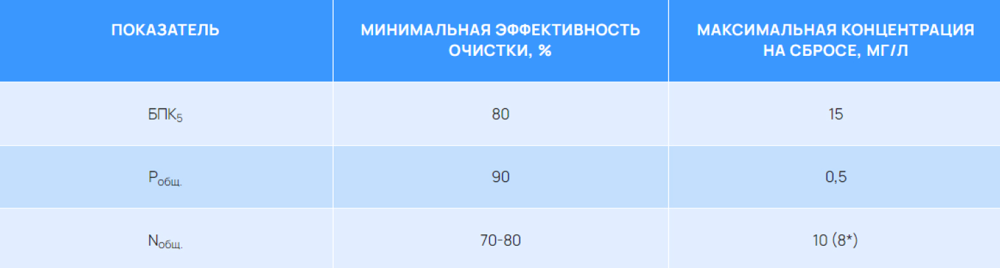
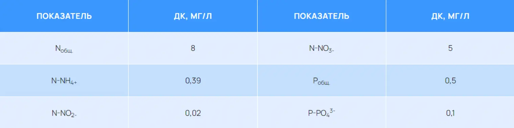
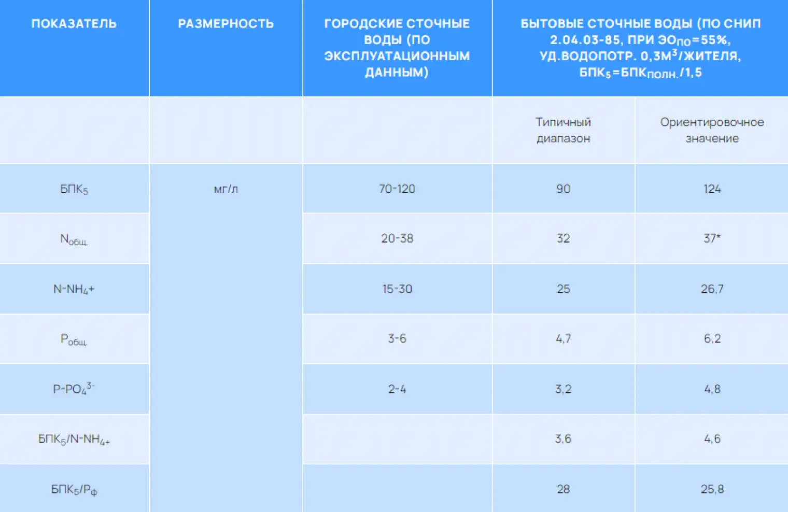

Обеспечение российских нормативов и требований ХЕЛКОМ по сбросу азота и фосфора в бассейн Балтийского моря
Россия является активным участником процесса
экологического возрождения Балтийского моря,
инициированного Хельсинской Конвенцией.
Обновленная Конвенция по охране морской природной среды
Балтийского моря, известная как Хельсинская Конвенция,
была принята в 1992г. и утверждена Правительством РФ
постановлением от 5 октября 1998г. №1202. Для реализации
целей Хельсинской Конвенции учреждена Комиссия по защите
морской среды Балтийского моря (ХЕЛКОМ), которая
разрабатывает рекомендации и наблюдает за их
выполнением.
В соответствии с международными обязательствами в рамках Хельсинской Конвенции, Россия должна выполнять рекомендации ХЕЛКОМ. Поэтому для объектов отведения сточных вод в бассейн Балтийского моря необходимо соблюдение как российских нормативов, так и требований ХЕЛКОМ. Для хозяйственно-бытовых сточных вод или сточных вод подобного типа (городских, поселковых и т.д.) рекомендацией ХЕЛКОМ 28E/5 от 15 ноября 2007г. установлены минимальные эффекты очистки и максимальные концентрации по трем показателям: БПК5, общий фосфор и общий азот. Требования ХЕЛКОМ зависят от количества жителей и периодически обновляются в направлении сокращения сброса загрязнений, особенно биогенных элементов (очередной пересмотр рекомендаций ХЕЛКОМ планируется в 2015г.). Наиболее жесткие требования предъявляются к очистке сточных вод, объем которых эквивалентен объему сточных вод от более 100 000 жителей (см. табл. 1).
В России сброс органических веществ, азота и фосфора нормируется по другим показателям: БПКполн. (обычно принимается БПКполн.=1,5 БПК5), аммонийный азот, нитриты, нитраты, фосфаты. В бассейне Балтийского моря российские поверхностные водные объекты, как правило, относятся к водоемам рыбохозяйственной категории водопользования. В результате, допустимые концентрации загрязняющих веществ в сбрасываемых сточных водах, обычно, устанавливаются на уровне ПДК для рыбохозяйственных водоемов:
- БПКполн.=3 мг/л,
- азот аммонийный – 0,39 мг/л,
- азот нитритов – 0,02 мг/л,
- азот нитратов – 9 мг/л,
- фосфор фосфатов – 0,2 мг/л.
Табл1. Рекомендации ХЕЛКОМ для хозяйственно-бытовых сточных вод (сточные воды от более 100 000 жителей)
 * — по обязательству ГУП «Водоканал Санкт-Петербурга», принятому для сточных вод, отводимых на сброс с очистных сооружений г. Санкт-Петербурга.Российские нормы по БПК более жесткие, но требования ХЕЛКОМ по азоту и фосфору могут оказаться определяющими.
Общий фосфор складывается из фосфора растворенных фосфатов (Рф) и связанного фосфора (Рсвяз.), включая органический фосфор( фосфор в составе органических веществ) и минеральный (фосфор в составе минеральных веществ, в частности, метал-фосфатов): Робщ.=Рф+Рсвяз.
При удалении фосфора по технологии биологической дефосфотации, а также при химическом осаждении фосфатов с вводом реагента (коагулянта) в систему биологической очистки (так называемая, технология симультанного осаждения), содержание связанного фосфора в активном иле, выносимом с очищенной водой, составляет 4-5%. Для выполнения условия Робщ.≤0,5 мг/л, концентрация взвешенных веществ в очищенных сточных водах не должна превышать: 6мг/л.
Без фильтрационной доочистки сточных вод обеспечить такую концентрацию взвешенных веществ практически невозможно. Если отказаться от фильтров, то при достаточном объеме вторичных отстойников системы биологической очистки, в лучшем случае можно обеспечить Ввых.≤8 мг/л. Но тогда выходная концентрация фосфора фосфатов должна быть не более 0,1 мг/л, что вдвое меньше ПДКрыб.хоз.
Общий азот представляет собой сумму органического и минерального (растворенного) азота, который включает азот нитритов, нитратов и аммонийный азот. Органический азот входит в состав растворенных и взвешенных веществ.
Во взвешенных веществах биологически очищенных сточных вод содержание азота составляет 6-7%. Содержание в очищенных сточных водах растворенных органических веществ, по нашим данным, хорошо коррелирует с остаточной концентрацией аммонийного азота.
Если концентрация NNН4+ в очищенных сточных водах отвечает ПДКрыб.хоз. (NNН4+=0,39мг/л), а величина Ввых.=8мг/л, то концентрация органического азота составит 2,12 мг/л. Исходя из требований ХЕЛКОМ (Nобщ.≤10 мг/л) и российских нормативов по N-NO2— и N-NН4+, допустимая концентрация нитратного азота будет равна: NNO3-=10-2,12-0,02-0,39=7,47 мг/л
Следовательно, для выполнения требований ХЕЛКОМ по общему азоту, необходимо обеспечить концентрацию нитратного азота ниже ПДКрыб.хоз. Если в перспективе, как ожидается, будет установлен норматив Nобщ.≤8 мг/л, то для соблюдения российских норм и рекомендаций ХЕЛКОМ потребуется обеспечить показатели по фосфору и азоту, приведенные в табл. 2.
Табл2. Ориентировочные допустимые концентрации азота и фосфора в сбрасываемых сточных водах, обеспечивающие выполнение и российских и международных (ХЕЛКОМ) нормативов
В сравнении с Западной Европой, в Санкт-Петербургском регионе России в силу общесплавной системы канализования и большого удельного водопотребления, городские сточные воды характеризуются невысоким содержанием основных загрязняющих веществ (см. табл. 3). При этом, сточные воды, поступающие на биологическую очистку имеют низкую величину соотношения БПК : N : Р.
Для надежного удаления азота, отношение БПК5/ Nобщ. должно составлять не менее 3 [1], что отвечает составу бытовых сточных вод после их осветления в первичных отстойниках с эффективностью 55% (БПК5/ Nобщ. =3,35 – см. табл. 3). Однако, в осветленных городских сточных водах, поступающих на биологическую очистку, величина БПК5/ Nобщ. существенно ниже (ориентировочно, БПК5/ Nобщ. =2,8 – см. табл. 3).
Исходя из ориентировочных показателей сточных вод (по данным табл. 3), расчетная потребность в БПК5 для нормативного удаления азота и фосфора (см. таб. 2) составит, не менее: ΔБПК5= 3ΔNД +7ΔРФ=3*20+7*3=81 мг/л
Так как входная величина БПК5 =90 мг/л (см. табл. 3), то резерва органических веществ нет. В отсутствии резерва органических веществ недопустима их потеря в ходе аэробного окисления. К таким потерям, в частности ведет нитратный рецикл иловой смеси (рецикл с выхода аэробной зоны на вход аноксидной зоны аэротенка).
Табл3. Типичные показатели городских сточных вод Санкт-Петербурга после механической очистки (на входе аэротенков)
Для обеспечения российского норматива по нитратному азоту (NNО2—=0,02мг/л), на выходе аэротенка необходимо поддерживать высокую концентрацию растворенного кислорода (С0≥3 мг/л). Высокая концентрация кислорода требуется также для предотвращения вторичного загрязнения сточной воды аммонийным азотом во вторичных отстойниках [3]. В результате, для выполнения российских норм по нитритному и аммонийному азоту, на выходе аэротенка следует обеспечить С0≥4÷6 мг/л.
Во многих применяемых за рубежом схемах (А2О, Phoredox, ИСТ, JHB, карусельный аэротенк) предусмотрена рециркуляция с выхода аэротенка в аноксидную зону (см.рис.1). Для нормативной очистки по нитратному азоту (см. табл. 2,3) необходим эффект удаления нитратов: ΔNД/ ΔNН=20/25=0,8. Соответственно, в этих схемах общий рецикл (R=Rи +Rн) должен составлять не менее 0,8/(1-0,8)=4. При коэффициенте рециркуляции активного ила Rи=1, требуется нитратный рецикл на уровне Rн=4-1=3. Если на выходе аэротенка С0=5 мг/л, то с нитратным рециклом в аноксидную зону поступает 3*5=15 мгО2/л ст.воды, что приведен к аэробному окислению органических веществ в количестве, не менее, 20 мг/л по БПК5. Как следует из предыдущих оценок, такая потеря БПК5 совершенно недопустима для российских городских сточных вод.
Кроме того, высокий рецикл (R=4) в указанных схемах сдвигает гидродинамический режим в аэротенке от режима вытеснения к режиму смешения. Соответственно, при том же возрасте активного ила, эффективность удаления аммонийного азота в процессе нитрификации падает, что не позволяет обеспечить российский норматив NNН4+=0,39 мг/л (в указанных схемах NNН4+=1÷2мг/л).
В этой связи, предпочтительнее схема Bardenpho, в которой можно обеспечить российские требования по сбросу аммонийного и нитратного азота. Но и в этой схеме неизбежны большие потери БПК5 из-за значительного нитратного рецикла (Rи=3), а введение второй аноксидной зоны существенно увеличивает общий объем аэротенка. Так как в зоне Д2 растворенных (легкоокисляемых) органических веществ практически нет, то протекает медленная денитрификация (денитрификация активном илом), скорость которой примерно в 5 раз ниже, чем в зоне Д1.
Для ликвидации потерь БПК5 схему Bardenpho можно дополнить деоксидной зоной (ДО), а также ввести зону ПД для «защиты» анаэробной зоны от поступления нитратов с потоком возвратного ила. Но в этом случае значительно возрастает общий объем аэротенка (для типичных российских сточных вод период аэрации составит 10-15 часов).
Сделанный анализ показывает, что применяемые за рубежом схемы не адаптированы к российским сточным водам и российским требованиям по сбросу соединений азота. Для обеспечения российских нормативов и требований ХЕЛКОМ следует стремиться к сокращению нитратного рецикла и созданию условий для эффективной нитрификации. Так как задача обычно состоит в реконструкции существующих аэротенков (без увеличения их объема), то требуется максимально интенсифицировать процессы удаления азота и фосфора.
Схема, разработанная АО «КРЕАЛ» для российских городских сточных вод, учитывает сформулированные выше требования. Нитратный рецикл сокращен в 2-3 раза и осуществляется не в аноксидную, а в аэробную зону, что позволяет, наряду с циркуляционным насосом, использовать высокопроизводительный эрлифт (удельный расход воздуха не более 0,2м3/м3 иловой смеси), стоимость которого на порядок ниже. Сокращение нитратного рецикла достигнуто введением аэробной зоны (Н1), размещенной между анаэробной и аноксидной зонами аэротенка.
Интенсификация процессов (сокращение необходимого объема аэротенка) достигается следующими решениями:
- размещение в аноксидной и анаэробной зонах плоскостной загрузки (интенсификация денитрификации и кислотного сбраживания с образованием летучих жирных кислот);
- рассредоточенная подача сточных вод, позволяющая поднять дозу ила в трех первых зонах и, соответственно, увеличить скорость биологических процессов;
- отказ от зоны медленной денитрификации.
Схема АО «КРЕАЛ» была внедрена в двух секциях трехкоридорных аэротенков Центральной станции аэрации г. Санкт-Петербурга и показала возможность обеспечения российских нормативов и ожидаемых в перспективе рекомендаций ХЕЛКОМ (Nобщ.≤8 мг/л), при периоде аэрации в аэротенке 5÷6 часов. Вместе с тем, в силу лимита по органическим веществам, нормативное удаление фосфора достигнуто только при дополнении биологической дефосфотации реагентным осаждением части фосфатов. Задача экологического возрождения Балтийского моря требует дальнейших совместных усилий по совершенствованию технологии очистки сточных вод. Успех этого процесса невозможен без учета особенностей состава сточных вод и российских нормативов на сброс.
А.Н. Николаев, Е.М. Крючихин, О.А. Маркушева
АО «КРЕАЛ»
Журнал «Экология производства» ,2010